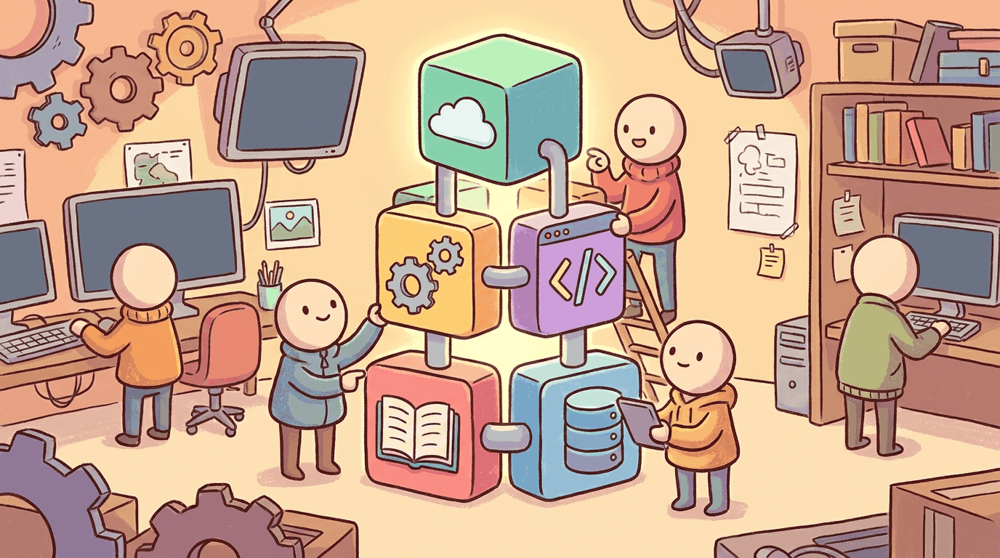

Part III walked you through provider APIs, prompt engineering, and hybrid ML+LLM design. This chapter consolidates the working toolchain that every workflow in the part assumes: the provider SDKs (OpenAI, Anthropic, Google, litellm), the prompt-engineering platforms (LangSmith, PromptLayer, Helicone), and the local-inference toolchain (Ollama, llama.cpp, MLX) you reach for when the cloud bill or the privacy budget runs out. Bookmark this chapter and come back to it whenever you stand up a new API client.
Sections in This Chapter
What Comes Next
Part IV shifts from "call a frontier model through its API" to "adapt a model to your task": continued pretraining, supervised fine-tuning, LoRA / QLoRA, preference optimization (DPO, GRPO), and the reasoning-recipe lineage that the DeepSeek-R1 release made canonical in 2025. Chapter 21 closes Part IV with its own Tools of the Trade chapter, focused on training frameworks (axolotl, TRL, torchtune, Unsloth), preference datasets, and the open-recipe ecosystem the post-R1 community settled on. The Tools chapters compound: every later one assumes the API-stack vocabulary that this chapter just locked in.